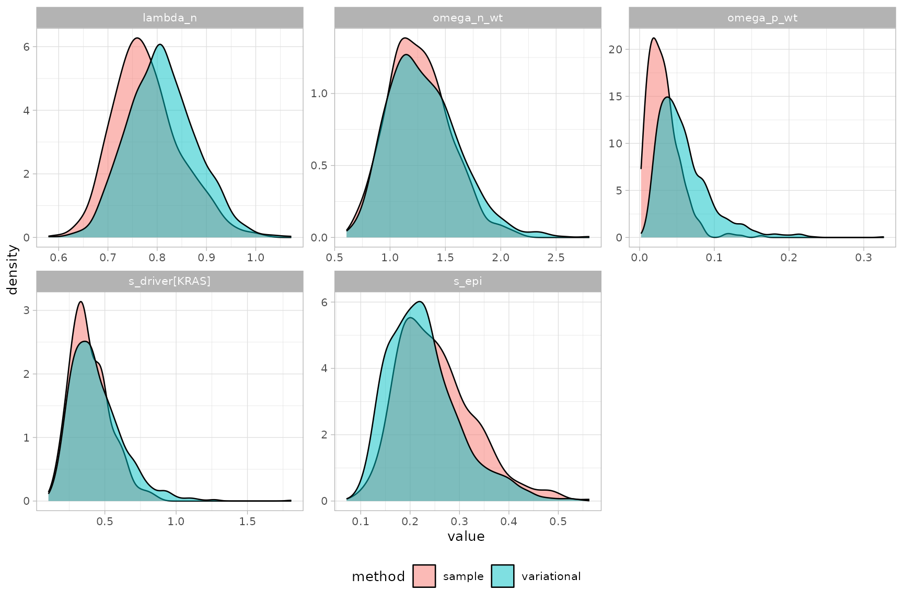

Variational vs MCMC inference
Source:vignettes/articles/Variational_vs_MCMC.Rmd
Variational_vs_MCMC.Rmd
library(PEPI)
library(cmdstanr)
#> This is cmdstanr version 0.8.0
#> - CmdStanR documentation and vignettes: mc-stan.org/cmdstanr
#> - CmdStan path: /home/runner/.cmdstan/cmdstan-2.39.0
#> - CmdStan version: 2.39.0
library(dplyr)
#>
#> Attaching package: 'dplyr'
#> The following objects are masked from 'package:stats':
#>
#> filter, lag
#> The following objects are masked from 'package:base':
#>
#> intersect, setdiff, setequal, union
library(ggplot2)fit_multirates() supports two inference methods:
-
method = "variational"(the default) runs ADVI, cmdstanr’s automatic differentiation variational inference. It is fast and a good choice while exploring data or iterating on priors, but it approximates the posterior with a (full-rank Gaussian) parametric family, has no convergence diagnostics, and can under- or over-estimate uncertainty in ways that are hard to detect from the fit alone. -
method = "sample"runs full Hamiltonian Monte Carlo (NUTS). It is slower but asymptotically exact, and comes with the convergence diagnostics covered invignette("Convergence_diagnostics")(R-hat, effective sample size, divergences, …).
This vignette fits the same data both ways and compares the two posteriors directly, to build intuition for when the difference matters.
Simulate data and fit both ways
set.seed(42)
sim = simulate_multirates_tree(
sampling_times = c(3, 6, 9),
tmrca = 1, t_min = 0,
lambda_n = 1, s_epi = 0.15,
omega_n_wt = 5e-3, omega_p_wt = 2e-3,
drivers = list(
list(id = "KRAS", t_driver = 2, s_driver = 0.3,
omega_n_driver = 5e-3, omega_p_driver = 2e-3,
ms_driver = -0.5, sigma_driver = 0.5,
alpha_n_driver = 1, beta_n_driver = 10,
alpha_p_driver = 1, beta_p_driver = 10)
),
clades_wt = list(
list(id = "c1", t_clade_wt = 1.5)
),
mu = 1e-7, l = 2.7e9, kappa = 20, sigma_count = 0.1,
seed = 42
)
fit_args = list(
cmdstan_path = cmdstanr::cmdstan_path(), seed = 45,
mu = 1e-7, l = 2.7e9, t_min = 0, ms_epi = 0, sigma_epi = 0.5,
alpha_lambda = 1, beta_lambda = 1, alpha_n_wt = 1, beta_n_wt = 10,
alpha_p_wt = 1, beta_p_wt = 10, min_kappa = 5, max_kappa = 200,
min_sigma_count = 0.01, max_sigma_count = 1
)
x_vb = init_multirates(sim$tables, m_trunk = sim$truth$m_trunk)
x_vb = do.call(fit_multirates, c(list(x = x_vb, method = "variational", ndraws = 1000), fit_args))
#> CmdStan path set to: /home/runner/.cmdstan/cmdstan-2.39.0
#> Init values were only set for a subset of parameters.
#> Missing init values for the following parameters:
#> lambda_n, s_epi, omega_p_wt, omega_n_wt, bc_wt, U_wt, W_wt, bc_clade_wt, s_driver, bc_driver, U_driver, W_driver, s_driver_n, t_driver_n, bc_driver_n, s_driver_p, t_driver_p, bc_driver_p, s_dc, delta_t_dc, bc_driver_dc, bc_clade_dc, U_dc, W_dc, omega_p_dc, omega_n_dc, omega_p_driver, omega_n_driver, kappa, sigma_count
#>
#> To disable this message use options(cmdstanr_warn_inits = FALSE).
#> ------------------------------------------------------------
#> EXPERIMENTAL ALGORITHM:
#> This procedure has not been thoroughly tested and may be unstable
#> or buggy. The interface is subject to change.
#> ------------------------------------------------------------
#> Rejecting initial value:
#> Error evaluating the log probability at the initial value.
#> Exception: lub_constrain: lb is 4.87392, but must be less than 3.000000 (in '/tmp/RtmpXzPQde/model-1e9d4af68df0.stan', line 353, column 2 to column 81)
#> Rejecting initial value:
#> Error evaluating the log probability at the initial value.
#> Exception: lub_constrain: lb is 5.59741, but must be less than 3.000000 (in '/tmp/RtmpXzPQde/model-1e9d4af68df0.stan', line 353, column 2 to column 81)
#> Rejecting initial value:
#> Error evaluating the log probability at the initial value.
#> Exception: lub_constrain: lb is 6.88754, but must be less than 3.000000 (in '/tmp/RtmpXzPQde/model-1e9d4af68df0.stan', line 353, column 2 to column 81)
#> Gradient evaluation took 7.9e-05 seconds
#> 1000 transitions using 10 leapfrog steps per transition would take 0.79 seconds.
#> Adjust your expectations accordingly!
#> Begin eta adaptation.
#> Iteration: 1 / 250 [ 0%] (Adaptation)
#> Iteration: 50 / 250 [ 20%] (Adaptation)
#> Iteration: 100 / 250 [ 40%] (Adaptation)
#> Iteration: 150 / 250 [ 60%] (Adaptation)
#> Iteration: 200 / 250 [ 80%] (Adaptation)
#> Iteration: 250 / 250 [100%] (Adaptation)
#> Success! Found best value [eta = 0.1].
#> Begin stochastic gradient ascent.
#> iter ELBO delta_ELBO_mean delta_ELBO_med notes
#> 100 -4217.949 1.000 1.000
#> 200 -806.620 2.615 4.229
#> 300 -315.630 2.262 1.556
#> 400 -212.549 1.817 1.556
#> 500 -161.714 1.517 1.000
#> 600 -126.474 1.310 1.000
#> 700 -90.461 1.180 0.485
#> 800 -78.260 1.052 0.485
#> 900 -74.109 0.941 0.398
#> 1000 -67.179 0.858 0.398
#> 1100 -62.939 0.764 0.314 MAY BE DIVERGING... INSPECT ELBO
#> 1200 -58.695 0.349 0.279
#> 1300 -57.094 0.196 0.156
#> 1400 -55.924 0.149 0.103
#> 1500 -54.715 0.120 0.072
#> 1600 -53.765 0.094 0.067
#> 1700 -53.733 0.054 0.056
#> 1800 -52.085 0.042 0.032
#> 1900 -51.622 0.037 0.028
#> 2000 -50.928 0.028 0.022
#> 2100 -51.332 0.022 0.021
#> 2200 -51.179 0.015 0.018
#> 2300 -51.188 0.013 0.014
#> 2400 -50.887 0.011 0.009 MEDIAN ELBO CONVERGED
#> Drawing a sample of size 1000 from the approximate posterior...
#> COMPLETED.
#> Finished in 0.3 seconds.
x_vb = get_posterior_multirates(x_vb)
x_mc = init_multirates(sim$tables, m_trunk = sim$truth$m_trunk)
x_mc = do.call(fit_multirates, c(list(x = x_mc, method = "sample", chains = 2, ndraws = 200), fit_args))
#> CmdStan path set to: /home/runner/.cmdstan/cmdstan-2.39.0
#> Init values were only set for a subset of parameters.
#> Missing init values for the following parameters:
#> - chain 1: lambda_n, s_epi, omega_p_wt, omega_n_wt, bc_wt, U_wt, W_wt, bc_clade_wt, s_driver, bc_driver, U_driver, W_driver, s_driver_n, t_driver_n, bc_driver_n, s_driver_p, t_driver_p, bc_driver_p, s_dc, delta_t_dc, bc_driver_dc, bc_clade_dc, U_dc, W_dc, omega_p_dc, omega_n_dc, omega_p_driver, omega_n_driver, kappa, sigma_count
#> - chain 2: lambda_n, s_epi, omega_p_wt, omega_n_wt, bc_wt, U_wt, W_wt, bc_clade_wt, s_driver, bc_driver, U_driver, W_driver, s_driver_n, t_driver_n, bc_driver_n, s_driver_p, t_driver_p, bc_driver_p, s_dc, delta_t_dc, bc_driver_dc, bc_clade_dc, U_dc, W_dc, omega_p_dc, omega_n_dc, omega_p_driver, omega_n_driver, kappa, sigma_count
#>
#> To disable this message use options(cmdstanr_warn_inits = FALSE).
#> Running MCMC with 2 sequential chains...
#> Chain 1 Rejecting initial value:
#> Chain 1 Error evaluating the log probability at the initial value.
#> Chain 1 Exception: lub_constrain: lb is 4.87392, but must be less than 3.000000 (in '/tmp/RtmpXzPQde/model-1e9d4af68df0.stan', line 353, column 2 to column 81)
#> Chain 1 Exception: lub_constrain: lb is 4.87392, but must be less than 3.000000 (in '/tmp/RtmpXzPQde/model-1e9d4af68df0.stan', line 353, column 2 to column 81)
#> Chain 1 Rejecting initial value:
#> Chain 1 Error evaluating the log probability at the initial value.
#> Chain 1 Exception: lub_constrain: lb is 5.59741, but must be less than 3.000000 (in '/tmp/RtmpXzPQde/model-1e9d4af68df0.stan', line 353, column 2 to column 81)
#> Chain 1 Exception: lub_constrain: lb is 5.59741, but must be less than 3.000000 (in '/tmp/RtmpXzPQde/model-1e9d4af68df0.stan', line 353, column 2 to column 81)
#> Chain 1 Rejecting initial value:
#> Chain 1 Error evaluating the log probability at the initial value.
#> Chain 1 Exception: lub_constrain: lb is 6.88754, but must be less than 3.000000 (in '/tmp/RtmpXzPQde/model-1e9d4af68df0.stan', line 353, column 2 to column 81)
#> Chain 1 Exception: lub_constrain: lb is 6.88754, but must be less than 3.000000 (in '/tmp/RtmpXzPQde/model-1e9d4af68df0.stan', line 353, column 2 to column 81)
#> Chain 1 Iteration: 1 / 1200 [ 0%] (Warmup)
#> Chain 1 Informational Message: The current Metropolis proposal is about to be rejected because of the following issue:
#> Chain 1 Exception: lub_constrain: lb is 9, but must be less than 3.000000 (in '/tmp/RtmpXzPQde/model-1e9d4af68df0.stan', line 353, column 2 to column 81)
#> Chain 1 If this warning occurs sporadically, such as for highly constrained variable types like covariance matrices, then the sampler is fine,
#> Chain 1 but if this warning occurs often then your model may be either severely ill-conditioned or misspecified.
#> Chain 1
#> Chain 1 Informational Message: The current Metropolis proposal is about to be rejected because of the following issue:
#> Chain 1 Exception: lub_constrain: lb is 9, but must be less than 3.000000 (in '/tmp/RtmpXzPQde/model-1e9d4af68df0.stan', line 353, column 2 to column 81)
#> Chain 1 If this warning occurs sporadically, such as for highly constrained variable types like covariance matrices, then the sampler is fine,
#> Chain 1 but if this warning occurs often then your model may be either severely ill-conditioned or misspecified.
#> Chain 1
#> Chain 1 Informational Message: The current Metropolis proposal is about to be rejected because of the following issue:
#> Chain 1 Exception: lub_constrain: lb is 9, but must be less than 3.000000 (in '/tmp/RtmpXzPQde/model-1e9d4af68df0.stan', line 353, column 2 to column 81)
#> Chain 1 If this warning occurs sporadically, such as for highly constrained variable types like covariance matrices, then the sampler is fine,
#> Chain 1 but if this warning occurs often then your model may be either severely ill-conditioned or misspecified.
#> Chain 1
#> Chain 1 Informational Message: The current Metropolis proposal is about to be rejected because of the following issue:
#> Chain 1 Exception: lub_constrain: lb is 9, but must be less than 3.000000 (in '/tmp/RtmpXzPQde/model-1e9d4af68df0.stan', line 353, column 2 to column 81)
#> Chain 1 If this warning occurs sporadically, such as for highly constrained variable types like covariance matrices, then the sampler is fine,
#> Chain 1 but if this warning occurs often then your model may be either severely ill-conditioned or misspecified.
#> Chain 1
#> Chain 1 Informational Message: The current Metropolis proposal is about to be rejected because of the following issue:
#> Chain 1 Exception: lub_constrain: lb is 9, but must be less than 3.000000 (in '/tmp/RtmpXzPQde/model-1e9d4af68df0.stan', line 353, column 2 to column 81)
#> Chain 1 If this warning occurs sporadically, such as for highly constrained variable types like covariance matrices, then the sampler is fine,
#> Chain 1 but if this warning occurs often then your model may be either severely ill-conditioned or misspecified.
#> Chain 1
#> Chain 1 Informational Message: The current Metropolis proposal is about to be rejected because of the following issue:
#> Chain 1 Exception: lub_constrain: lb is 8.99695, but must be less than 3.000000 (in '/tmp/RtmpXzPQde/model-1e9d4af68df0.stan', line 353, column 2 to column 81)
#> Chain 1 If this warning occurs sporadically, such as for highly constrained variable types like covariance matrices, then the sampler is fine,
#> Chain 1 but if this warning occurs often then your model may be either severely ill-conditioned or misspecified.
#> Chain 1
#> Chain 1 Informational Message: The current Metropolis proposal is about to be rejected because of the following issue:
#> Chain 1 Exception: lub_constrain: lb is 5.17598, but must be less than 3.000000 (in '/tmp/RtmpXzPQde/model-1e9d4af68df0.stan', line 353, column 2 to column 81)
#> Chain 1 If this warning occurs sporadically, such as for highly constrained variable types like covariance matrices, then the sampler is fine,
#> Chain 1 but if this warning occurs often then your model may be either severely ill-conditioned or misspecified.
#> Chain 1
#> Chain 1 Informational Message: The current Metropolis proposal is about to be rejected because of the following issue:
#> Chain 1 Exception: lub_constrain: lb is 9, but must be less than 3.000000 (in '/tmp/RtmpXzPQde/model-1e9d4af68df0.stan', line 353, column 2 to column 81)
#> Chain 1 If this warning occurs sporadically, such as for highly constrained variable types like covariance matrices, then the sampler is fine,
#> Chain 1 but if this warning occurs often then your model may be either severely ill-conditioned or misspecified.
#> Chain 1
#> Chain 1 Informational Message: The current Metropolis proposal is about to be rejected because of the following issue:
#> Chain 1 Exception: lub_constrain: lb is 9, but must be less than 3.000000 (in '/tmp/RtmpXzPQde/model-1e9d4af68df0.stan', line 353, column 2 to column 81)
#> Chain 1 If this warning occurs sporadically, such as for highly constrained variable types like covariance matrices, then the sampler is fine,
#> Chain 1 but if this warning occurs often then your model may be either severely ill-conditioned or misspecified.
#> Chain 1
#> Chain 1 Informational Message: The current Metropolis proposal is about to be rejected because of the following issue:
#> Chain 1 Exception: lub_constrain: lb is 9, but must be less than 3.000000 (in '/tmp/RtmpXzPQde/model-1e9d4af68df0.stan', line 353, column 2 to column 81)
#> Chain 1 If this warning occurs sporadically, such as for highly constrained variable types like covariance matrices, then the sampler is fine,
#> Chain 1 but if this warning occurs often then your model may be either severely ill-conditioned or misspecified.
#> Chain 1
#> Chain 1 Informational Message: The current Metropolis proposal is about to be rejected because of the following issue:
#> Chain 1 Exception: lub_constrain: lb is 3.00815, but must be less than 3.000000 (in '/tmp/RtmpXzPQde/model-1e9d4af68df0.stan', line 353, column 2 to column 81)
#> Chain 1 If this warning occurs sporadically, such as for highly constrained variable types like covariance matrices, then the sampler is fine,
#> Chain 1 but if this warning occurs often then your model may be either severely ill-conditioned or misspecified.
#> Chain 1
#> Chain 1 Iteration: 100 / 1200 [ 8%] (Warmup)
#> Chain 1 Informational Message: The current Metropolis proposal is about to be rejected because of the following issue:
#> Chain 1 Exception: lub_constrain: lb is 3.29367, but must be less than 3.000000 (in '/tmp/RtmpXzPQde/model-1e9d4af68df0.stan', line 353, column 2 to column 81)
#> Chain 1 If this warning occurs sporadically, such as for highly constrained variable types like covariance matrices, then the sampler is fine,
#> Chain 1 but if this warning occurs often then your model may be either severely ill-conditioned or misspecified.
#> Chain 1
#> Chain 1 Iteration: 200 / 1200 [ 16%] (Warmup)
#> Chain 1 Iteration: 300 / 1200 [ 25%] (Warmup)
#> Chain 1 Iteration: 400 / 1200 [ 33%] (Warmup)
#> Chain 1 Iteration: 500 / 1200 [ 41%] (Warmup)
#> Chain 1 Iteration: 600 / 1200 [ 50%] (Warmup)
#> Chain 1 Iteration: 700 / 1200 [ 58%] (Warmup)
#> Chain 1 Iteration: 800 / 1200 [ 66%] (Warmup)
#> Chain 1 Iteration: 900 / 1200 [ 75%] (Warmup)
#> Chain 1 Iteration: 1000 / 1200 [ 83%] (Warmup)
#> Chain 1 Iteration: 1001 / 1200 [ 83%] (Sampling)
#> Chain 1 Iteration: 1100 / 1200 [ 91%] (Sampling)
#> Chain 1 Iteration: 1200 / 1200 [100%] (Sampling)
#> Chain 1 finished in 1.2 seconds.
#> Chain 2 Iteration: 1 / 1200 [ 0%] (Warmup)
#> Chain 2 Informational Message: The current Metropolis proposal is about to be rejected because of the following issue:
#> Chain 2 Exception: lub_constrain: lb is 9, but must be less than 3.000000 (in '/tmp/RtmpXzPQde/model-1e9d4af68df0.stan', line 353, column 2 to column 81)
#> Chain 2 If this warning occurs sporadically, such as for highly constrained variable types like covariance matrices, then the sampler is fine,
#> Chain 2 but if this warning occurs often then your model may be either severely ill-conditioned or misspecified.
#> Chain 2
#> Chain 2 Informational Message: The current Metropolis proposal is about to be rejected because of the following issue:
#> Chain 2 Exception: lub_constrain: lb is 9, but must be less than 3.000000 (in '/tmp/RtmpXzPQde/model-1e9d4af68df0.stan', line 353, column 2 to column 81)
#> Chain 2 If this warning occurs sporadically, such as for highly constrained variable types like covariance matrices, then the sampler is fine,
#> Chain 2 but if this warning occurs often then your model may be either severely ill-conditioned or misspecified.
#> Chain 2
#> Chain 2 Informational Message: The current Metropolis proposal is about to be rejected because of the following issue:
#> Chain 2 Exception: lub_constrain: lb is 9, but must be less than 3.000000 (in '/tmp/RtmpXzPQde/model-1e9d4af68df0.stan', line 353, column 2 to column 81)
#> Chain 2 If this warning occurs sporadically, such as for highly constrained variable types like covariance matrices, then the sampler is fine,
#> Chain 2 but if this warning occurs often then your model may be either severely ill-conditioned or misspecified.
#> Chain 2
#> Chain 2 Informational Message: The current Metropolis proposal is about to be rejected because of the following issue:
#> Chain 2 Exception: lub_constrain: lb is 9, but must be less than 3.000000 (in '/tmp/RtmpXzPQde/model-1e9d4af68df0.stan', line 353, column 2 to column 81)
#> Chain 2 If this warning occurs sporadically, such as for highly constrained variable types like covariance matrices, then the sampler is fine,
#> Chain 2 but if this warning occurs often then your model may be either severely ill-conditioned or misspecified.
#> Chain 2
#> Chain 2 Informational Message: The current Metropolis proposal is about to be rejected because of the following issue:
#> Chain 2 Exception: lub_constrain: lb is 8.99953, but must be less than 3.000000 (in '/tmp/RtmpXzPQde/model-1e9d4af68df0.stan', line 353, column 2 to column 81)
#> Chain 2 If this warning occurs sporadically, such as for highly constrained variable types like covariance matrices, then the sampler is fine,
#> Chain 2 but if this warning occurs often then your model may be either severely ill-conditioned or misspecified.
#> Chain 2
#> Chain 2 Informational Message: The current Metropolis proposal is about to be rejected because of the following issue:
#> Chain 2 Exception: lub_constrain: lb is 6.51592, but must be less than 3.000000 (in '/tmp/RtmpXzPQde/model-1e9d4af68df0.stan', line 353, column 2 to column 81)
#> Chain 2 If this warning occurs sporadically, such as for highly constrained variable types like covariance matrices, then the sampler is fine,
#> Chain 2 but if this warning occurs often then your model may be either severely ill-conditioned or misspecified.
#> Chain 2
#> Chain 2 Informational Message: The current Metropolis proposal is about to be rejected because of the following issue:
#> Chain 2 Exception: lub_constrain: lb is 9, but must be less than 3.000000 (in '/tmp/RtmpXzPQde/model-1e9d4af68df0.stan', line 353, column 2 to column 81)
#> Chain 2 If this warning occurs sporadically, such as for highly constrained variable types like covariance matrices, then the sampler is fine,
#> Chain 2 but if this warning occurs often then your model may be either severely ill-conditioned or misspecified.
#> Chain 2
#> Chain 2 Informational Message: The current Metropolis proposal is about to be rejected because of the following issue:
#> Chain 2 Exception: lub_constrain: lb is 9, but must be less than 3.000000 (in '/tmp/RtmpXzPQde/model-1e9d4af68df0.stan', line 353, column 2 to column 81)
#> Chain 2 If this warning occurs sporadically, such as for highly constrained variable types like covariance matrices, then the sampler is fine,
#> Chain 2 but if this warning occurs often then your model may be either severely ill-conditioned or misspecified.
#> Chain 2
#> Chain 2 Informational Message: The current Metropolis proposal is about to be rejected because of the following issue:
#> Chain 2 Exception: lub_constrain: lb is 5.75093, but must be less than 3.000000 (in '/tmp/RtmpXzPQde/model-1e9d4af68df0.stan', line 353, column 2 to column 81)
#> Chain 2 If this warning occurs sporadically, such as for highly constrained variable types like covariance matrices, then the sampler is fine,
#> Chain 2 but if this warning occurs often then your model may be either severely ill-conditioned or misspecified.
#> Chain 2
#> Chain 2 Iteration: 100 / 1200 [ 8%] (Warmup)
#> Chain 2 Iteration: 200 / 1200 [ 16%] (Warmup)
#> Chain 2 Informational Message: The current Metropolis proposal is about to be rejected because of the following issue:
#> Chain 2 Exception: lub_constrain: lb is 3.23029, but must be less than 3.000000 (in '/tmp/RtmpXzPQde/model-1e9d4af68df0.stan', line 353, column 2 to column 81)
#> Chain 2 If this warning occurs sporadically, such as for highly constrained variable types like covariance matrices, then the sampler is fine,
#> Chain 2 but if this warning occurs often then your model may be either severely ill-conditioned or misspecified.
#> Chain 2
#> Chain 2 Iteration: 300 / 1200 [ 25%] (Warmup)
#> Chain 2 Iteration: 400 / 1200 [ 33%] (Warmup)
#> Chain 2 Iteration: 500 / 1200 [ 41%] (Warmup)
#> Chain 2 Iteration: 600 / 1200 [ 50%] (Warmup)
#> Chain 2 Iteration: 700 / 1200 [ 58%] (Warmup)
#> Chain 2 Iteration: 800 / 1200 [ 66%] (Warmup)
#> Chain 2 Iteration: 900 / 1200 [ 75%] (Warmup)
#> Chain 2 Iteration: 1000 / 1200 [ 83%] (Warmup)
#> Chain 2 Iteration: 1001 / 1200 [ 83%] (Sampling)
#> Chain 2 Iteration: 1100 / 1200 [ 91%] (Sampling)
#> Chain 2 Iteration: 1200 / 1200 [100%] (Sampling)
#> Chain 2 finished in 1.3 seconds.
#>
#> Both chains finished successfully.
#> Mean chain execution time: 1.2 seconds.
#> Total execution time: 2.6 seconds.
#> Warning: 1 of 400 (0.0%) transitions ended with a divergence.
#> See https://mc-stan.org/misc/warnings for details.
x_mc = get_posterior_multirates(x_mc)Compare the two posteriors
params = c("lambda_n", "s_epi", "s_driver", "omega_n_wt", "omega_p_wt")
comparison = bind_rows(
x_vb$posterior$multirates %>% filter(family == "param", type == "posterior") %>% mutate(method = "variational"),
x_mc$posterior$multirates %>% filter(family == "param", type == "posterior") %>% mutate(method = "sample")
) %>%
filter(base %in% params) %>%
mutate(facet = ifelse(is.na(id), base, paste0(base, "[", id, "]")))
ggplot(comparison) +
geom_density(aes(x = value, fill = method), alpha = 0.5) +
facet_wrap(~facet, scales = "free") +
theme_light(base_size = 10) +
theme(legend.position = "bottom")
For lambda_n, omega_n_wt,
s_driver and s_epi the two methods agree
closely. omega_p_wt is a different story: ADVI’s Gaussian
approximation gives it a longer right tail than MCMC does, because this
switch rate’s posterior is concentrated near a boundary of its support -
exactly the kind of skewed, non-Gaussian shape ADVI struggles to
approximate well. Had we only fit with
method = "variational", we would have overstated the
uncertainty on omega_p_wt without any way to notice from
the ADVI fit alone.
Confirm the MCMC fit is trustworthy before trusting the comparison
The comparison above is only informative if the MCMC fit itself has converged - otherwise “MCMC disagrees with ADVI” could just as easily mean “the sampler hasn’t mixed yet”. Always check:
plot_diagnostics(x_mc)
#> Warning: Groups with fewer than two datapoints have been dropped.
#> ℹ Set `drop = FALSE` to consider such groups for position adjustment purposes.
#> Groups with fewer than two datapoints have been dropped.
#> ℹ Set `drop = FALSE` to consider such groups for position adjustment purposes.
#> `stat_bin()` using `bins = 30`. Pick better value `binwidth`.
#> `stat_bin()` using `bins = 30`. Pick better value `binwidth`.
Practical guidance
- Use
method = "variational"while exploring data, iterating on priors, or checking that the model runs at all - it is typically an order of magnitude faster. - Before reporting final results, refit the same data with
method = "sample"and inspectplot_diagnostics(). - If the two posteriors disagree noticeably for a parameter, trust the MCMC fit (once it has converged) - ADVI’s approximation error is exactly what full sampling is designed to avoid.